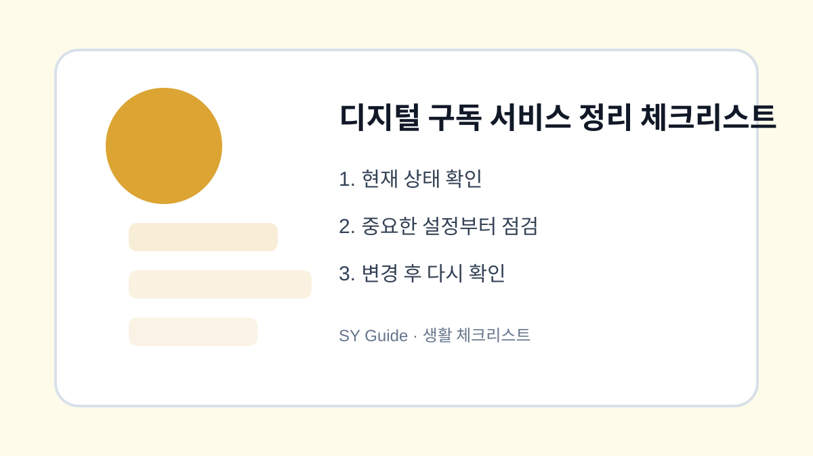

디지털 구독 서비스 정리 체크리스트
OTT, 음악, 클라우드, 앱 구독을 확인하고 중복 결제와 무료체험 자동 결제를 줄이는 방법입니다.

디지털 구독은 작은 금액처럼 보여도 여러 개가 쌓이면 부담이 됩니다. 무료체험 후 자동 결제되거나 같은 기능을 가진 앱을 중복으로 쓰는 경우도 많습니다. 한 달에 한 번 구독 목록을 정리하면 고정 지출을 줄이는 데 도움이 됩니다.
결제 내역부터 확인
앱스토어, 구글 플레이, 카드 명세서, 통신사 결제 내역을 함께 봅니다. 한 곳에서만 확인하면 빠지는 구독이 생길 수 있습니다. 특히 가족 결제나 예전 계정으로 가입한 서비스는 놓치기 쉽습니다.
사용 빈도 비교
최근 한 달 동안 거의 쓰지 않은 구독은 일시 중지나 해지를 검토합니다. 클라우드처럼 자료 보관과 연결된 서비스는 해지 전 백업을 확인해야 합니다. OTT나 음악 서비스는 가족 공유 여부도 함께 봅니다.
| 구독 | 확인 기준 | 주의점 |
|---|---|---|
| OTT | 시청 빈도 | 가족 공유 확인 |
| 클라우드 | 자료 보관 | 해지 전 백업 |
| 앱 구독 | 실사용 여부 | 무료체험 종료일 |
상황별로 놓치기 쉬운 마지막 점검
- 앱스토어와 카드 내역 함께 확인하기
- 무료체험 종료일 기록하기
- 중복 기능 구독 줄이기
- 클라우드는 해지 전 자료 백업하기
- 가족 공유 중인 서비스는 상의 후 변경하기
구독 정리는 돈만 아끼는 일이 아니라 디지털 생활을 단순하게 만드는 과정입니다. 정기적으로 확인하면 불필요한 알림과 결제도 함께 줄일 수 있습니다.
디지털 구독을 정리해야 하는 상황
무료 체험이 끝났거나 가족이 쓰는 서비스와 겹치면 매달 작은 결제가 계속 나갈 수 있습니다. 앱스토어, 플레이스토어, 카드 명세서, 서비스 홈페이지 결제를 함께 확인해야 빠지는 구독이 줄어듭니다.
구독 해지에서 자주 하는 실수
앱을 삭제해도 구독이 자동으로 끝나는 것은 아닙니다. 결제된 계정과 해지 경로를 확인하고, 다음 결제일 전에 해지 완료 화면이나 이메일을 남겨두는 것이 좋습니다.
디지털 구독 정리 관련 설정을 먼저 확인해야 하는 이유
디지털 구독 정리 관련 설정은 단순히 메뉴 하나를 켜고 끄는 문제가 아니라, 실제 사용 흐름에서 어떤 불편을 줄이려는지 먼저 정해야 합니다. 같은 메뉴라도 기기 제조사, 운영체제 버전, 앱 업데이트 상태에 따라 이름이 달라질 수 있으므로 현재 화면을 기준으로 차근차근 확인하는 것이 좋습니다.
디지털 구독 정리에서 자주 생기는 실수
디지털 구독을 정리해야 하는 상황을 정리할 때는 되돌리기 어려운 삭제나 계정 변경을 마지막 단계로 미루는 것이 좋습니다. 먼저 표시, 알림, 권한처럼 쉽게 복구할 수 있는 항목부터 확인하면 실수 부담을 줄일 수 있습니다.
디지털 구독 정리 점검 후 다시 볼 부분
디지털 구독을 정리해야 하는 상황은 사용자마다 필요한 범위가 다르기 때문에, 자주 쓰는 앱과 계정부터 적용하는 편이 좋습니다. 바꾸기 전 화면과 바꾼 뒤 결과를 비교하면 어떤 설정이 실제로 도움이 됐는지 판단하기 쉽습니다.